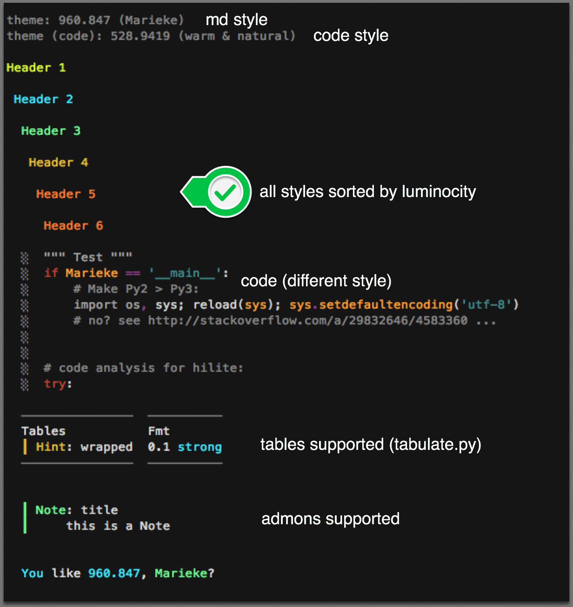
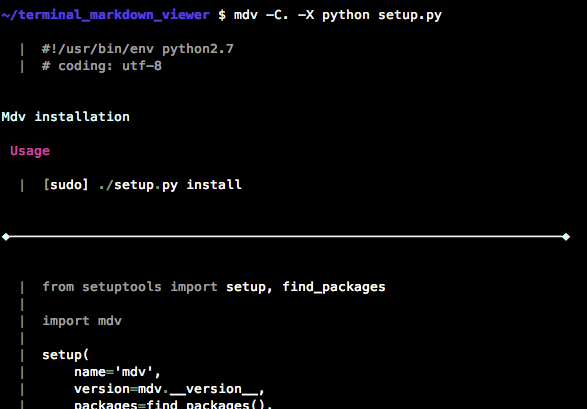
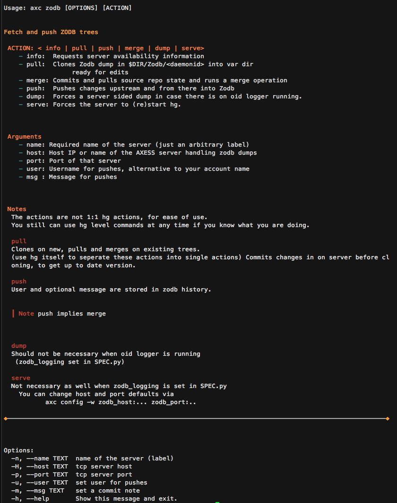
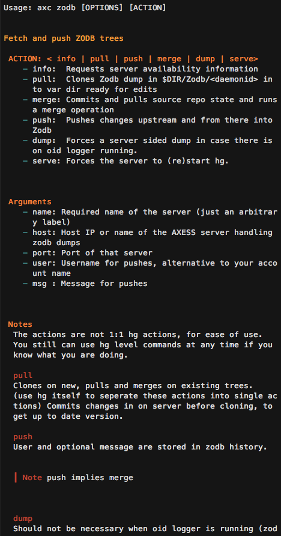
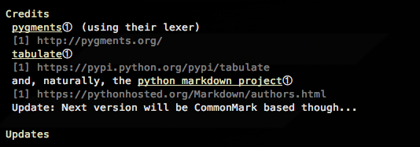
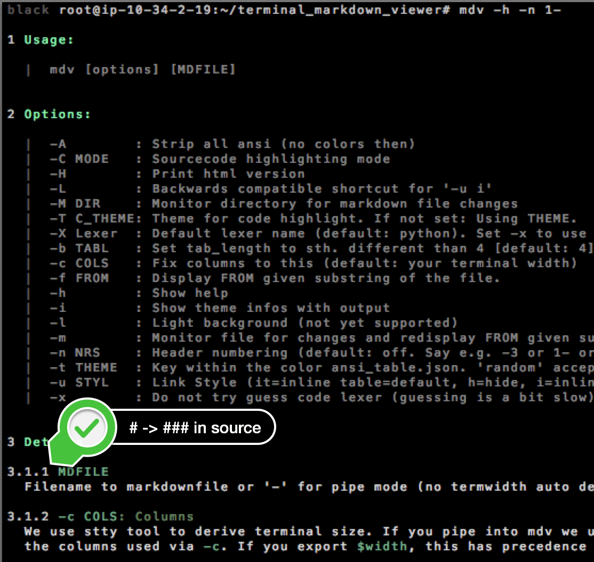

Terminal Markdown Viewer (v1)¤
This is old documentation for version 1 of mdv
In this version 2 we did not change mdv sources. No changes of existing behaviour.
Details:
- We just moved the old sources into a
v1tree and have themdvscript pointing to that. - Api wise
mdv.markdownviewermaps to the v1 module.import mdv,mdv.mainare kept stable, also calling v1'smainmethod. - Tests for v1 had been moved to
tests/v1and themdv/miscfolder with perftests is now withintests/v1/misc. - Development installation changed from setuptools based towards poetry.
If other usages of version one broke with the update, please post an issue.
When you edit multiple md files remotely, like in a larger mkdocs project, context switches between editing terminal(s) and viewing browser may have some efficiency impact. Also sometimes there is just no browser, like via security gateways offering just a fixed set of applications on the hop in machine. Further, reading efficiency and convenience is often significantly improved by using colors. And lastly, using such a thing for cli applications might improve user output, e.g. for help texts.
This is where mdv, a Python based Markdown viewer for the terminal might be a good option.
- Terminal Markdown Viewer
- Features
- Alternatives
- Installation
- Usage
- Customization
- Screenshots
- TODO
- Credits
- Updates
If markdown is often "simple" enough to be somewhat readable on 256 color terminals (except images that is).

from
### Source
# Header 1
## Header 2
### Header 3
#### Header 4
##### Header 5
###### Header 6
```python
""" Test """
# Make Py2 >>> Py3:
import os, sys; reload(sys); sys.setdefaultencoding('utf-8')
# no? see http://stackoverflow.com/a/29832646/4583360 ...
# code analysis for hilite:
try:
from pygments import lex, token
from pygments.lexers import get_lexer_by_name, guess_lexer
```
| Tables | Fmt |
| -- | -- |
| !!! hint: wrapped | 0.1 **strong** |
!!! note: title
this is a Note
You can also use mdv as a source code viewer, best when you have docstrings with markdown in your code:

from
~/terminal_markdown_viewer $ cat setup.py
#!/usr/bin/env python2.7
# coding: utf-8
"""_
# Mdv installation
## Usage
[sudo] ./setup.py install
----
"""
from setuptools import setup, find_packages
import mdv
setup(
name='mdv',
version=mdv.__version__,
(the '_' after the docstring telling mdv that markdown follows)
mdv is a proof of concept hack: While for simple structures it does its job quite well, for complex markdown you want to use other tools. Especially for inlined html it simply fails.
Features¤
- Tons of theme combinations: mdv ships with > 200 luminocity sorted themes, converted from html themes tables to ansi. Those can be combined for code vs regular markdown output...
- Admonitions
- Tables, incl. wide table handling avoiding "interleaving"
- Somewhat hackable, all in one module
- Useable as lib as well
- File change monitor
- Text wrapping
- Source code highlighter
- Little directory change monitor (cames handy when working on multiple files, to get the current one always displayed)
- which can run arbitrary commands on file changes
- which passes filepath, raw and prettyfied content to the other command Note: Poor man's implementation, polling. Check inotify based tools if you want sth better.
Alternatives¤
The ones I know of (and which made me write mdv ;-) ):
- There are quite a few from the js community (e.g. msee, ansidown, ansimd and also nd which is great) but they require nodejs & npm, which I don't have on my servers. Also I personally wanted table handling and admonition support throughout and prob. too old to hack other peoples' js (struggling enough with my own). But have a look at them, they do some things better than mdv in this early version (I try to learn from them). Also this would be worth a look ;-)
- pandoc -> html -> elinks, lynx or pandoc -> groff -> man. (Heavy and hard to use from within other programs. Styling suboptimal)
- vimcat (Also heavy and hard to use inline in other programs)
Summary: For production ready robust markdown viewing (e.g. for your customers) I recommend nd still, due to the early state of mdv. For playing around, especially with theming or when with Python, this one might be a valid alternative to look at.
Installation¤
pip install mdv
If you get no attribute HTML_PLACEHOLDER: update your markdown package.
Here is a macport (thanks Aljaž).
mdv is also available in the FreeBSD package repositories via pkg install py36-mdv (the Python version might change in the future).
Manual Install: Requirements¤
- python == 2.7 or > 3.5
- py markdown (pip install markdown)
- py pygments (pip install pygments)
- py yaml (pip install pyyaml)
- py docopt (pip install docopt)
- py tabulate (pip install tabulate)
Further a 256 color terminal (for now best with dark background) and font support for a few special separator characters (which you could change via config).
For light terms you'd just need to revert the 5 colors from the themes, since they are sorted by luminocity.
I did not test anything on windows.
Usage¤
CLI¤
# Usage:
mdv [OPTIONS] MDFILE
# Options:
MDFILE : Path to markdown file
-A : Strip all ansi (no colors then)
-C MODE : Sourcecode highlighting mode
-H : Print html version
-L : Backwards compatible shortcut for '-u i'
-M DIR : Monitor directory for markdown file changes
-T C_THEME: Theme for code highlight. If not set: Using THEME.
-X Lexer : Default lexer name (default: python). Set -x to use it always.
-b TABL : Set tab_length to sth. different than 4 [default: 4]
-c COLS : Fix columns to this (default: your terminal width)
-f FROM : Display FROM given substring of the file.
-h : Show help
-i : Show theme infos with output
-l : Light background (not yet supported)
-m : Monitor file for changes and redisplay FROM given substring
-n NRS : Header numbering (default: off. Say e.g. -3 or 1- or 1-5
-t THEME : Key within the color ansi_table.json. 'random' accepted.
-u STYL : Link Style (it=inline table=default, h=hide, i=inline)
-x : Do not try guess code lexer (guessing is a bit slow)
# Notes:
We use stty tool to derive terminal size. If you pipe into mdv we use 80 cols.
## To use mdv.py as lib:
Call the main function with markdown string at hand to get a
formatted one back. Sorry then for no Py3 support, accepting PRs if they don't screw Py2.
## FROM:
FROM may contain max lines to display, seperated by colon.
Example:
-f 'Some Head:10' -> displays 10 lines after 'Some Head'
If the substring is not found we set it to the _first_ character of the file -
resulting in output from the top (if your terminal height can be derived correctly through the stty cmd).
## Code Highlighting
Set -C <all|code|doc|mod> for source code highlighting of source code files.
Mark inline markdown with a '\_' following the docstring beginnings.
- all: Show markdown docstrings AND code (default if you say, e.g. `-C.`)
- code: Only Code
- doc: Only docstrings with markdown
- mod: Only the module level docstring
## File Monitor:
If FROM is not found we display the whole file.
## Directory Monitor:
We check only text file changes, monitoring their size.
By default .md, .mdown, .markdown files are checked but you can change like `-M 'mydir:py,c,md,'` where the last empty substrings makes mdv also monitor any file w/o extension (like 'README').
### Running actions on changes:
If you append to `-M` a `'::<cmd>'` we run the command on any change detected (sync, in foreground).
The command can contain placeholders:
_fp_ # Will be replaced with filepath
_raw_ # Will be replaced with the base64 encoded raw content
of the file
_pretty_ # Will be replaced with the base64 encoded prettyfied output
Like: mdv -M './mydocs:py,md::open "_fp_"' which calls the open
command with argument the path to the changed file.
## Themes
### Theme Rollers
mdv -T all [file]: All available code styles on the given file.
mdv -t all [file]: All available md styles on the given file.
If file is not given we use a short sample file.
So to see all code hilite variations with a given theme:
Say C_THEME = all and fix THEME
Setting both to all will probably spin your beach ball...
### Environ Vars
`$MDV_THEME` and `$MDV_CODE_THEME` are understood, e.g. `export MDV_THEME=729.8953` in your .bashrc will give you a consistent color scheme.
Regarding the strange theme ids: Those numbers are the calculated total luminocity of the 5 theme colors.
Inline¤
mdv is designed to be used well from other python programs when they have md at hand which should be displayed to the user:
from mdv import markdownviewer as mdv
# config like this:
mdv.hr_sep = '_
# (...)
# calling like this (all CLI options supported, check def main
formatted = mdv.main(my_raw_markdown, c_theme=..., <further config kws>)
Note that I set the defaultencoding to utf-8 in
__main__. I have this as my default python2 setup and did not test inline usage w/o. Check this for risks.
Sample Inline Use Case: click module docu¤
Armin Ronacher's click is a great framework for writing larger CLI apps - but its help texts are a bit boring, intended to be customized.
Here is how:
Write a normal click module with a function but w/o a doc string as shown:
@pass_context
def cli(ctx, action, name, host, port, user, msg):
""" docu from module __doc__ """
On module level you provide markdown for it, like:
~/axc/plugins/zodb_sub $ cat zodb.py | head
"""
# Fetch and push ZODB trees
## ACTION: < info | pull | push | merge | dump | serve>
- info: Requests server availability information
(...)
which you set at click module import time:
mod.cli.help = mod.__doc__
Lastly do this in your app module:
from click.formatting import HelpFormatter
def write_text(self, text):
""" since for markdown pretty out on cli I found no good tool
so I built my own """
# poor man's md detection:
if not text.strip().startswith('#'):
return orig_write_text(self, text)
from axc.markdown.mdv import main as mdv
self.buffer.append(mdv(md=text, theme=os.environ['AXC_THEME']))
HelpFormatter.orig_write_text = HelpFormatter.write_text
HelpFormatter.write_text = write_text
The output has then colors:

and at smaller terms rewraps nicely:

Further, having markdown in the module __doc__ makes it simple to add into a global project docu framework, like mkdocs.
Customization¤
You can supply all CLI args in $HOME/.mdv, in yaml format.
More flex you have via $HOME/.mdv.py, which is execed if present, when
running main.
Alternatively, in mdv.py you can change some config straight forward.
# ---------------------------------------------------------------------- Config
txt_block_cut, code_pref, list_pref, br_ends = '✂', '| ', '- ', '◈'
# ansi cols (default):
# R: Red (warnings), L: low visi, BG: background, BGL: background light, C=code
# H1 - H5 = the theme, the numbers are the ansi color codes:
H1, H2, H3, H4, H5, R, L, BG, BGL, T, TL, C = \
231, 153, 117, 109, 65, 124, 59, 16, 188, 188, 59, 102
# Code (C is fallback if we have no lexer). Default: Same theme:
CH1, CH2, CH3, CH4, CH5 = H1, H2, H3, H4, H5
code_hl = { "Keyword" : 'CH3', "Name" : 'CH1',
"Comment" : 'L', "String": 'CH4',
"Error" : 'R', "Number": 'CH4',
"Operator": 'CH5',
"Generic" : 'CH2'
}
admons = {'note' : 'H3', 'warning': 'R',
'attention': 'H1', 'hint' : 'H4',
'summary' : 'H1', 'hint' : 'H4',
'question' : 'H5', 'danger' : 'R',
'caution' : 'H2'
}
def_lexer = 'python'
guess_lexer = True
# also global. but not in use, BG handling can get pretty involved...
background = BG
# normal text color:
color = T
show_links = None
# could be given, otherwise read from ansi_tables.json:
themes = {}
# sample for the theme roller feature:
md_sample = ''
# ------------------------------------------------------------------ End Config
Any importing module can overwrite those module global variables as well.
Should you need yet additional themes, add them to ansi_tables.json file by adding your ansi codes there.
Screenshots¤
Random results, using the theme roller feature:

Note the table block splitting when the table does not fit (last picture).
TODO¤
- Refactor the implementation, using a config class
- Lines separators not optimal (nd does better)
- Test light colorscheme
- Dimming
- A few grey scale and 8 color themes
- Sorting of the json by luminance
- Some themes have black as darkest color, change to dark grey
- Common Mark instead of markdown
PerfTests¤
Rendering this readme 100 times:
black root@ip-10-34-2-19:~/terminal_markdown_viewer/mdv/misc# python perfest.py
0.03 paka
0.04 paka_breaks
0.04 paka_xml
1.47 mistletoe
8.70 markdown
5.22 commonmark
-
markdown did better than commonmark w/o extensions but table and fenced code are definitelly required for 99% users.
-
paka is a wrapper around the C reference lib -> requires compilation.
-
mistletoe is pure python, crazy that they are so much faster than CommonMark. They say in pypy they are speed up even much more.
mistletoe downside: py2 only via a fork.
Credits¤
pygments (using their lexer)
and, naturally, the python markdown project
Update: Next version will be CommonMark based though...
Updates¤
July 2016:¤
Sort of an excuse for the long long time w/o an update: I did actually start working on a more solid version based on CommonMark but that went a bit out of scope, into a general html terminal viewer, which will probably never be finished :-/
So at least here an update containing the stuff you guys sent as PRs, thanks all!!
- installation and dependencies via a setup.py (thanks Martin)
- supporting
echo -e "# foo\n## bar" | mdv -and a 'light' theme (thanks Stanislav) - and a few other improvements regarding python2.7, file location and pyyaml, thanks all.
Also:
- fixed the most obvious bugs with nested ordered and unordered lists
- fixed bold marker
- different color highlighting for the list markers
- added a source code highlighting mode, which highlights also docstrings in markdown (
-C <mode>) - some tests in the tests folder
- using
textwrapnow for the wrapping, to avoid these word breaks a few complained about - you can supply the default lexer now, e.g.
-X javascript [-x] - fixed but with not rendered strong texts
- pip install mdv
Nov 2016:¤
-
travis
-
Inline link tables

Sept 2018:¤
- Merged some PRs, thanks.
- Decent code formatter. Not that this weekend hack got more readable though. Well, maybe a bit.
- Revised Py3 support (finally found peace with it, since they enforce UTF-8 everywhere the new features begin to outweigh the nightmares of trying to decode everything without need).
- Indented code in PY3 was broken, fixed that. Why, PY3, are you creating crap like
"b'foo'"instead raising or auto-decoding (since you work anyway only with your UTF8-everywhere-assumption)!? - Header numbering feature added (
-n 2-4or-n 1-)  - docopt and pyyaml install requirement removed, better config file handling.
- pypi markdown rendering for the readme, finally.